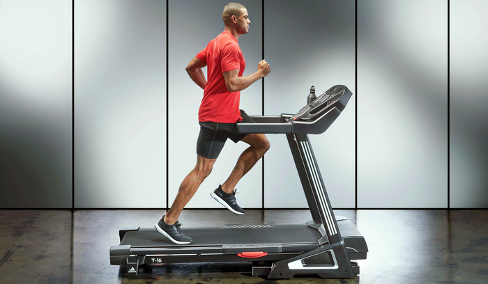
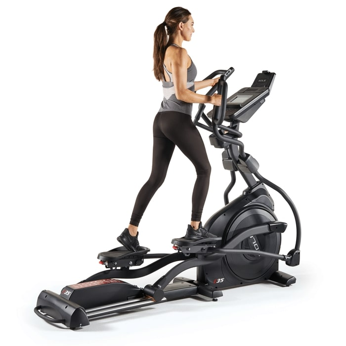

Cardio
Treadmill
The most well-known way to get some cardio in. It's like running except not on roads. A great way to start exercising for beginners with equipment.
Elliptical
What some claim to be the absolute best form of cardio, and in terms of calories burned, it is. It works all muscle groups, and keeps heart rate up